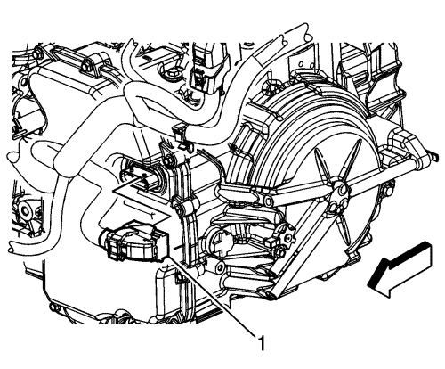
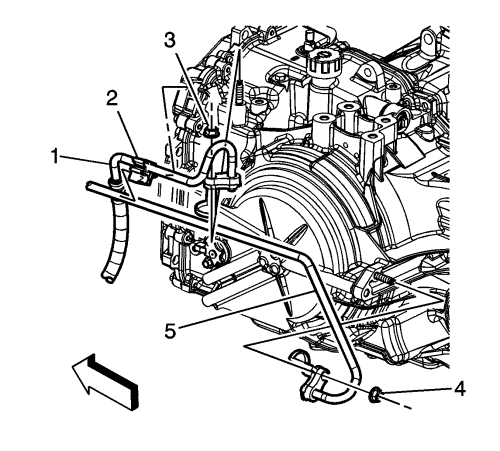

Sustitución de la caja de cambios
Procedimiento de desmontaje
- Desmonte la bandeja de la batería. Consultar Sustitución de la bandeja de la batería .
- Extraiga el soporte y el cable de la palanca selectora del cambio de marchas. Consultar Sustitución del soporte del cable de la palanca selectora .

- Extraiga de la transmisión los tornillos del alojamiento (1) de transmisión izquierda.
- Vacíe el aceite del cambio. Consultar Sustitución del aceite del cambio .

- Desconecte el conector eléctrico (1) del módulo de control del cambio (TCM) del cuerpo de válvulas de control.

- Extraiga los tubos flexibles de entrada (1) y salida (5) del refrigerador de aceite del seguro (2) de la tapa del cuerpo de válvula de control.
- Desmonte el conducto de entrada del refrigerador de aceite de la transmisión (3) de la transmisión.
- Desmonte la tuerca del conducto de entrada del refrigerador de aceite de la transmisión (1) de la transmisión.
- Desmonte el conducto de salida del refrigerador de aceite de la transmisión (4) de la transmisión.
- Desmonte la tuerca del conducto de salida del refrigerador de aceite de la transmisión (5) de la transmisión.
- Tapone y/o tape la manguera y el cambio para evitar la contaminación.
- Extraiga los tornillos de cambio al motor de la parte superior (2).
- Desmonte el marco Consultar Sustitución del marco .
- Desconecte el eje de accionamiento del volante y el eje intermedio desde la transmisión. Consultar Sustitución del semieje de la rueda delantera .
- En vehículos equipados con tracción a todas las ruedas, desmonte la caja de transferencia. Consultar Sustitución del conjunto de la caja de transferencia
- Extraiga el soporte de montaje de la caja de cambios trasero de la caja de cambios. Consultar Sustitución del soporte de montaje del cambio - Parte trasera : FWD (tracción delantera) → Tracción a las 4 ruedas .
- Extraiga el soporte del montaje de la transmisión delantera de la transmisión. Consultar Sustitución del soporte de montaje delantero de la caja de cambios .

- Desmonte el motor de arranque. Consultar Sustitución del motor de arranque : LNQ → LF1 → LE5 .
- Marque la relación del disco de inercia al convertidor de par para el nuevo montaje.
- Extraiga los tornillos del convertidor de par al disco de inercia (1).
- Utilice un gato de transmisión para apoyar la transmisión.
- Extraiga los tornillos de la transmisión que quedan (1, 3, 4).
Nota: Asegúrese de que el convertidor de par permanece colocado firmemente en el eje de entrada del cambio mientras separa y extrae la caja de cambios.
- Separe la caja de cambios del motor.
- Con el gato de transmisión baje la transmisión lo suficiente como para extraerla.
Procedimiento de montaje
- Suba la transmisión con el gato de transmisión y colóquela en el motor.
Precaución: Consulte Precaución con las fijaciones en la sección Prólogo
- Monte los tornillos de la transmisión (1, 3, 4) y apriételos hasta 75 N·m (55 lb ft).
- Extraiga el gato de la transmisión.
- Monte los tornillos del convertidor de par al disco de inercia (1) y apriételos hasta 62 N·m (46 lib. pie).
- Instale el motor de arranque. Consultar Sustitución del motor de arranque : LNQ → LF1 → LE5 .
- Monte el alojamiento de la transmisión delantera a la transmisión. Consultar Sustitución del soporte de montaje delantero de la caja de cambios .
- En vehículos equipados con tracción a todas las ruedas, monte la caja de transferencia. Consultar Sustitución del conjunto de la caja de transferencia .
- Monte el soporte de montaje de la caja de cambios trasero en la caja de cambios. Consultar Sustitución del soporte de montaje del cambio - Parte trasera : FWD (tracción delantera) → Tracción a las 4 ruedas .
- Monte el eje de accionamiento intermedio y los ejes de accionamiento de las ruedas en la transmisión. Consultar Sustitución del semieje de la rueda delantera .
- Monte el bastidor . Consultar Sustitución del marco .
- Coloque los tornillos que sujetan la transmisión superior al motor (2) y apriételos hasta 75 N·m (55 lb ft).
- Monte la tuerca del conducto de salida del refrigerador de aceite de la transmisión (5) a la transmisión.
- Monte la tuerca de sujeción de la manguera de salida del refrigerador del aceite del cambio (4) y apriétela hasta 22 N·m (16 lb ft).
- Monte la tuerca del conducto de entrada del refrigerador de aceite de la transmisión (1) a la transmisión.
- Monte la tuerca de sujeción de la manguera de entrada del refrigerador de aceite de la transmisión (3).
- Monte los tubos flexibles de entrada (1) y salida (5) del refrigerador de aceite al seguro (2) de la tapa del cuerpo de válvula de control.
- Conecte el conector eléctrico del TCM de la carrocería de la válvula de control (1).
- Monte el soporte y el cable de la palanca selectora del cambio de marchas. Consultar Sustitución del soporte del cable de la palanca selectora .
- Monte la bandeja de la batería. Consultar Sustitución de la bandeja de la batería .
- Ajuste el cable de la palanca selectora de la posición del cambio automático. Consultar Ajuste del cable de la palanca selectora .
- Llene la caja de cambios con aceite. Consultar Sustitución del aceite del cambio .
- Coloque los tornillos que sujetan el alojamiento de la transmisión izquierda (1) al motor y apriételos hasta 50 N·m (37 lb ft).
- Si se ha instalado un TCM nuevo en el vehículo, el módulo NUEVO se debe reprogramar. Consultar Sistema de programación de servicio (SPS) .
Nota: El procedimiento Adaptaciones de programación rápida del servicio debe realizarse cuando se ha llevado a cabo una de las siguientes reparaciones en el vehículo. Si no se realiza el procedimiento después de uno de los siguientes casos de reparación, el rendimiento del cambio podrá verse disminuido y los DTC del cambio se activarán:| • | Revisión/servicio interno del cambio |
| • | Sustitución o reparación del cuerpo de válvulas |
| • | Sustitución del conjunto de válvula solenoide de control |
| • | Actualización de calibración/software del TCM |
| • | Cualquier servicio que responda a un problema de calidad en el cambio |
- Lleve a cabo las adaptaciones de programación rápida del servicio. Consultar Adaptaciones de programación rápida del servicio .
- Efectúe una prueba de carretera con el vehículo.
| © Copyright Chevrolet Europe. All rights reserved |